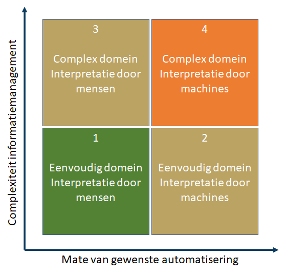
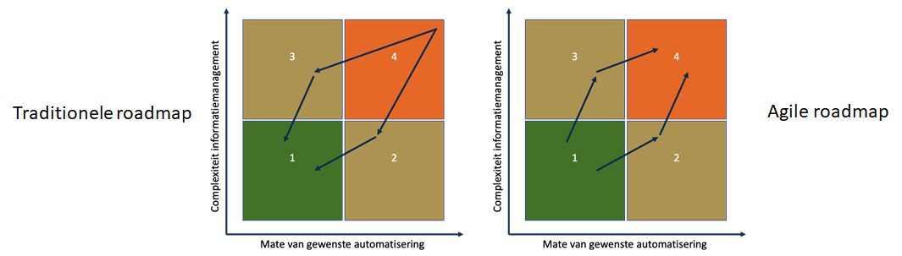

Een usecase beschrijft hoe systemen in een concrete situatie door betrokkenen gebruikt worden: wie kan met het betreffende systeem (systemen) wat doen? Het kiezen van een usecase is moeilijk. Als de usecase te specifiek is (een specifieke diagnose, specifieke behandeling) dan zijn er teveel usecases om ooit te automatiseren. Laat staan dat we het eens kunnen worden over de prioriteit. Als de usecase te generiek is, zal zij onvoldoende aansluiten bij de praktijk. Als de usecase te moeilijk en te groot is (en niet in kleine stapjes kan worden geïmplementeerd) is het risico op falen zeer groot. Als de usecase (of het stapje) te klein is, zullen zorgverleners en patiënten de meerwaarde onvoldoende merken.
Wat is een goede usecase?
Een goede usecase voldoet aan een aantal voorwaarden:
- Rechtvaardiging: De usecase draagt bij aan een door iedereen gevoeld ‘hoger doel’. Bijvoorbeeld aan de strategie van betrokken organisaties (strategic fit).
- Wenselijkheid: De usecase lost problemen van direct betrokkenen (zorgverleners, patiënten, naasten) op én introduceert geen nieuwe problemen voor direct betrokkenen.
- Uitvoerbaarheid: De usecase is met de huidige stand van de techniek uitvoerbaar en bij voorkeur in stapjes op te delen.
Zoals blijkt uit het onderstaande diagram bevindt de ideale usecase zich precies op het snijpunt van uitvoerbaarheid, wenselijkheid en rechtvaardiging. Houd bij het prioriteren van usecases rekening met deze drie aspecten.

Pas op voor de veelvoorkomende valkuilen in het diagram, zoals vaagheid bij het definiëren van wensen, of dingen roepen als ‘de techniek kan het probleem niet zijn’ (onbeargumenteerd optimisme).
Hoe stel ik wenselijkheid vast?
Wenselijkheid is iets anders dan rechtvaardiging. Wenselijkheid gaat over de behoeften en wensen van direct betrokkenen. Een aardige manier om ze vast te stellen is door een ‘actor / doel lijst’ op te stellen.
| Actor | Doel | Prioriteit |
|---|---|---|
| Alle | Op ieder moment actueel overzicht van de medicatie van patiënten in het eigen dossiervormend systeem | 1 |
| Huisarts, Medisch specialist, thuiszorg | Inzicht in thuismeetgegevens van patiënten vanuit eigen dossiervormend systeem | 2 |
| Huisarts | Inzicht in door de thuiszorg opgestelde behandelplan en rapportages vanuit HIS | 3 |
| Huisarts | Automatisch onboarden van patiënten in thuismeetprogramma’s vanuit HIS | 2 |
| .... | .... | .... |
Hoe ontwikkel ik een usecase?
Op hoofdlijnen kan het volgende proces worden gevolgd:
- Start met het vaststellen van de dominante samenwerkingsvorm(en) binnen de usecase. Stel ook vast welke ’Medisch Service Centrum’ (MSC) diensten nodig zijn.
- Bepaal welke types systemen (platforms en ondersteunende systemen) passen bij de samenwerkingsvormen en MSC diensten.
- Bepaal welke koppelvlakken met dossiervormende systemen nodig zijn
- Bepaal welke afspraken op zorginhoudelijk, organisatorisch of technisch niveau relevant zijn
- Voer een marktscan uit en detecteer ‘uitdagingen’
- Ontwikkel oplossingen voor uitdagingen en/ of manage verwachtingen
- Ontwikkel de usecase agile
Mogelijke uitdagingen zijn bijvoorbeeld:
- Geen van de gevonden (combinaties van) oplossingen sluit volledig aan bij de actor/ doel lijst
- De benodigde koppelvlakken zijn niet beschikbaar
- Partijen kunnen niet aan de benodigde (technische, zorginhoudelijke, organisatorische) afspraken voldoen
Wat is agile werken?
Agile werken wil zeggen dat usecases in kleine iteraties ontwikkeld en getest worden. De focus ligt op maximaal leren en fail fast. Liever na twee weken ontdekken dat je de verkeerde weg in bent geslagen dan na een peperduur programma van twee jaar.
Agile werken betekent dat niet alle denkbare eisen en wensen in één keer gerealiseerd gaan worden, maar dat eerst gewerkt wordt aan een zogenaamd minimum viable product (MVP): de eisen die absoluut noodzakelijk zijn binnen een eerste versie van de usecase. Na die eerste versie worden continu nieuwe functionaliteiten toegevoegd en in de praktijk getest. Bij tegenvallende resultaten wordt direct bijgestuurd (fail fast). Continu meten (meten en verbeteren) is randvoorwaardelijk aan een agile werkwijze.
Agile werken wil niet zeggen dat er geen gedeelde visie of ‘stip op de horizon is’ maar wel dat die visie en die horizon zich continu aan kunnen passen aan hetgeen geleerd wordt tijdens de ontwikkeling.
Met wie ontwikkel ik een usecase?
Het ontwikkelen van een usecase is een multidisciplinair proces. Voor de ontwikkeling wordt een team samengesteld. Een team is tussen de 5 en 7 mensen groot. Waar nodig consulteert het team externe specialisten. Het team bestaat uit:
- Een vertegenwoordiging van direct betrokkenen, dus van de eindgebruikers (zorgverleners, patiënten). Dit wordt meestal een product owner genoemd. Goede kandidaten zijn klinisch informatici.
- Technisch specialisten die kennis hebben van de onderste lagen van het menu, de ontwikkelaar(s)
- Een tester
- Een coach, soms een SCRUM master genoemd.
- Iemand met een design thinking of User Experience (UX) achtergrond
Hoe technisch complex is een usecase?
De technische complexiteit van een usecase wordt beïnvloed door twee aspecten:
- De mate waarin alles ‘geautomatiseerd’ moet verlopen.
- Hoe ingewikkeld informatiemanagement binnen de usecase is. Hoe meer verschillende actoren verantwoordelijk zijn voor het creëren, wijzigen, beheren en evalueren van informatie én hoe veelvormiger de informatie is, hoe complexer het domein.
Door die twee aspecten in een diagram op de x-as en y-as te zetten ontstaan 4 kwadranten. Kwadrant 4 is het moeilijkst, kwadrant 1 het gemakkelijkst.
Agile werken betekent dat een roadmap wordt ontwikkeld die loopt van kwadrant 1 naar kwadrant 4 (via 2 en 3) en niet van kwadrant 4 naar kwadrant 1. De natuurlijke neiging van veel zorgverleners is om te kiezen voor een meer traditionele roadmap.
